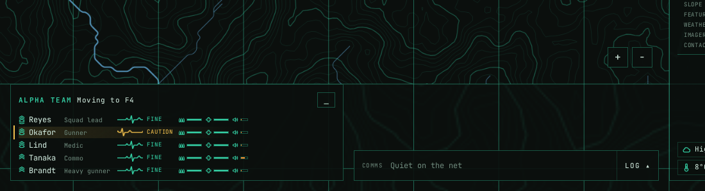
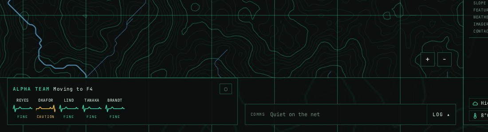
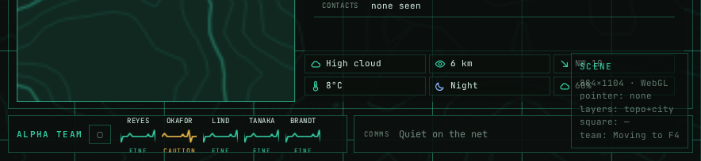
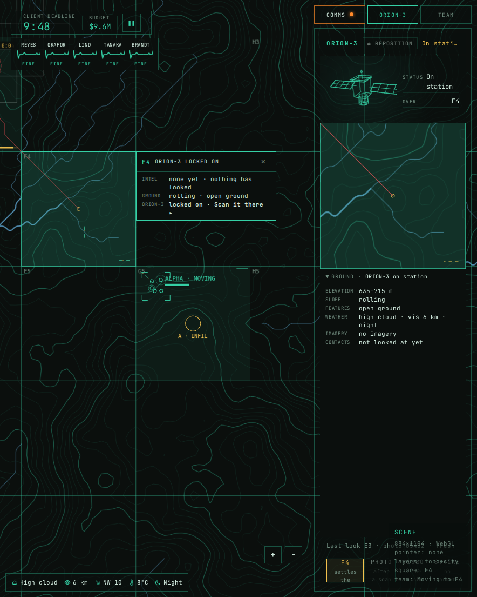
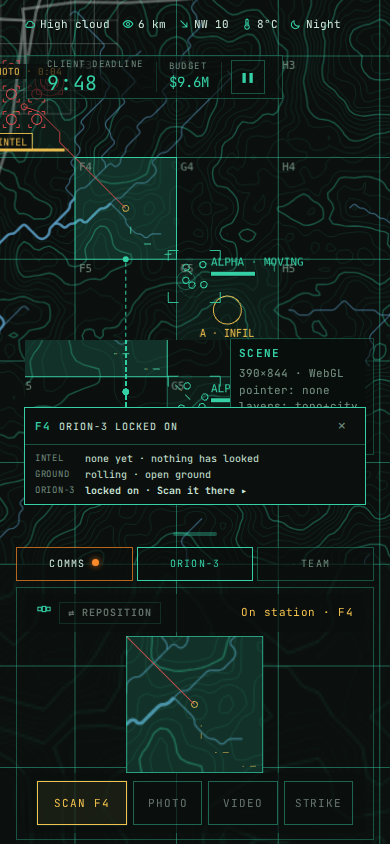
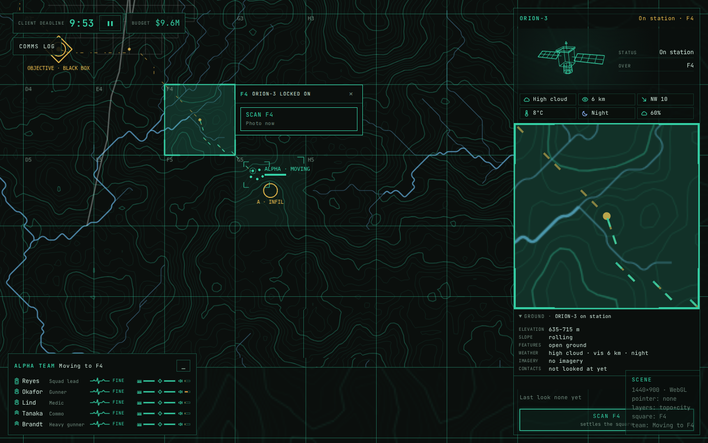
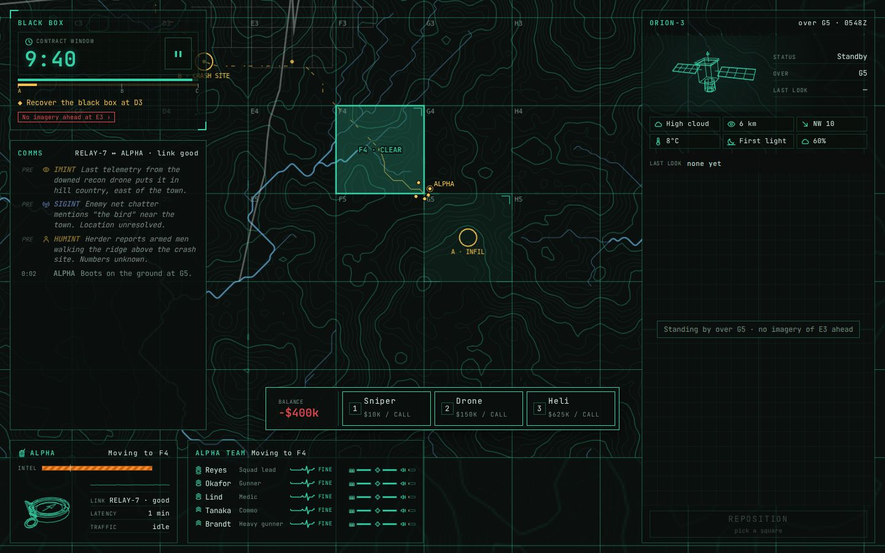
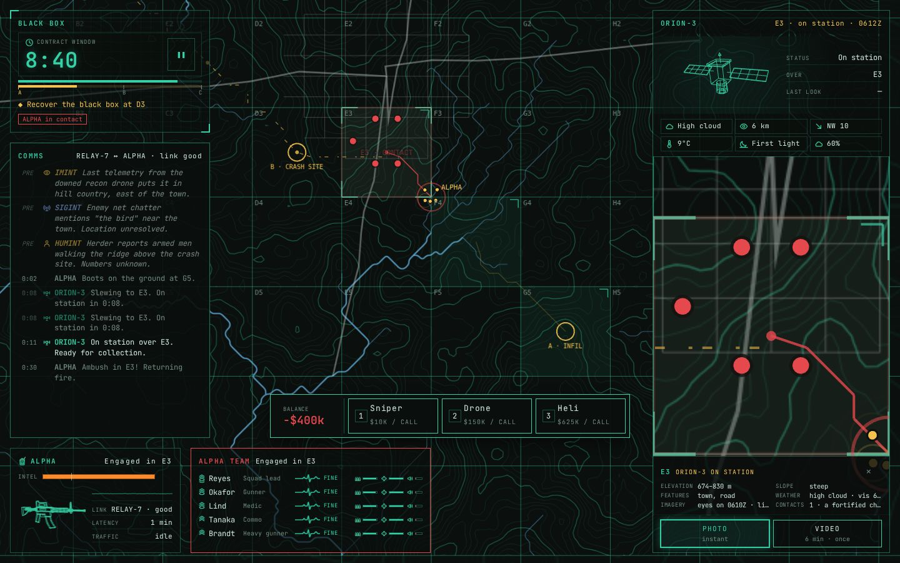
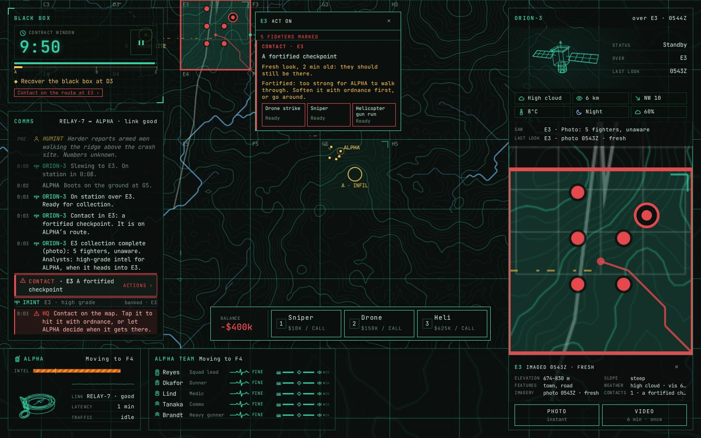
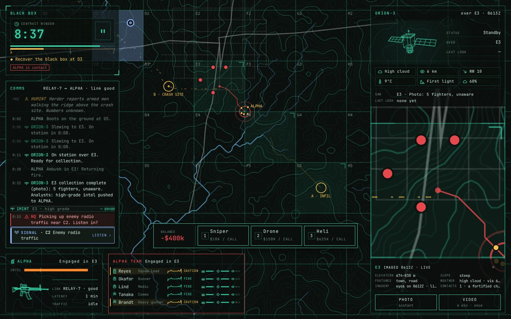

← Review hub: everything up for review
ILI-1221 · working session · 2026-10-28 · rev 6 · ILI-1245 mission panel and ILI-1249 environment added 2026-10-29 · ILI-1343 panels rework added 2026-11-02 · ILI-1344 option D added 2026-11-03 · ILI-1352 ability bar added 2026-11-03 · ILI-1357 IA v2 started 2026-11-03 · ILI-1358 step 2 added · ILI-1363 step 3 added 2026-11-05 · ILI-1459 desktop design pass added 2026-11-12 · ILI-1461 Fold and phone added 2026-11-12 · ILI-1472 team panel added 2026-11-12 · ILI-1534 alert options added 2026-11-14
PMC War Room: wireframe and information architecture
A first pass to argue with. It covers what's on screen today, how it could be grouped and ranked, one name per thing, and where each panel goes on desktop, a Fold and a phone. Nothing here is built. Mark it up in chat.
ILI-1534 · ALERT that says "tap me" · 2026-11-14 · map, desktop
Three ways to make the ALERT unmissable, with the action on it
Your note: the alert didn't alert anyone. It looks like a styled box, and nothing says tap me to deal with it. Today's band (taller, flashing, ILI-1529) reads ALERT · 2 TANGO and nothing more. Each option below keeps the band on the square's bottom edge (ILI-1524) and works with the edge marker you picked for covered or off-screen alerts (ILI-1546). The words follow the comms standard once ILI-1549 lands.
Option A
The band carries its action
my pickE3
Alert2 tango · E3Strike ▸
◀ ALERT · E3
- A filled red STRIKE ▸ button on the band: the one thing to press, in the word for what it does.
- Off screen or covered: the edge marker at the map's edge, tap pans to it.
- Smallest change; reads as a button, not a label.
- Still one band among the map's marks if several alerts are up.
Option B
The square itself pulses
loudestE3
Alert2 tango · E3Strike ▸
◀ ALERT · E3
- A red ring breathes out from the square while the alert waits; the band holds steady with its STRIKE ▸ button.
- The eye goes to the ground, not to a box: you see where the threat is.
- More motion on the map; two alerts at once means two rings.
Option C
What's happening, then a big tap target
most wordsE3
ContactALPHA engaged
2 hostile · E3
Tap to strike
◀ ALERT · E3
- Two lines say what it is (ALPHA engaged, how many, where), and a separate chip says TAP TO STRIKE.
- Says the most: you know it's ALPHA's fight before you tap.
- Wider, more reading; "tap" is a UI word, not comms.
ILI-1472 · ALPHA team panel · full redesign and interaction set · 2026-11-12 · desktop, Fold, phone
One bar on the bottom edge that never moves; the table opens out of it like a drawer
Your note: the information is good and the visual base is there, but the size, the way it responds to the screen, how it sits on the page, and its full and minimized modes are a mess. The operators, heartbeats, status and bars all stay. What changes is the frame they sit in and how you open and close it.
Today



- The two modes are different heights (152 px full, 108 px minimized), and neither is the 48 px of the comms strip beside it. The bottom edge is never one line, and toggling moves the map.
- Minimized still has a header and stacks the heartbeats under it, so it barely saves any space.
- The bars have no labels. Which bar is ammo, which is meds and which is noise lives only in tiny icons.
- The table uses about 70% of its width. The right side is empty.
- The toggle is a lone ▁ / ▢ in the corner that doesn't say what it does.
- On a Fold the strip is cramped: the status words are clipped at the bottom, and "ALPHA TEAM" and the button eat the room.
Proposed: three states
CommsALPHA Moving to F4. Eyes on the treeline.
OperatorHeartbeatStatusAmmoMedsNoise
ReyesSquad leadFine
OkaforGunnerCaution
LindMedicFine
TanakaCommsFine
BrandtHeavy gunnerFine
CommsALPHA Moving to F4. Eyes on the treeline.
OKAFOR "I'm hit, still in the fight."
CommsOKAFOR I'm hit, still in the fight.
The interaction set
- Open: click anywhere on the bar, or the operator slot you want (that row is highlighted). The table slides up in 200 ms.
- Close: click the bar again (▾), press
Esc, or click the map. - One drawer at a time: opening the team closes the comms log, and the other way round, the same as the phone's one-panel rule.
- Hover: hovering an operator's slot or row brackets them on the map, and hovering them on the map lights their slot.
- It never opens by itself. Alerts show on the bar (colour, a blink) and in the docked prompt. You decide when to open it.
- The bar never moves or resizes, so the map never reflows when the drawer opens or closes.
Sizes, every screen
- Desktop: a 520 × 48 bar at bottom left beside the comms strip, with the same baseline. The drawer is 520 wide and as tall as its rows (about 190 px).
- Fold upright: the bar is half the bottom row. Its slots show names only (no role), and the drawer opens up over ORION-3's dock at the same width.
- Phone: the TEAM target is the bar. Tapping it slides the same table up as the one open panel. The role drops into a second line and the bars narrow.
- Fold sideways and tablet sideways: the TEAM tab in the rail shows the same table.
Calls for you:
- The bar plus drawer: a 48 px bar that never moves, with the table opening upward out of it. Approve it, or say what to change.
- Labelled columns (Ammo, Meds, Noise) in place of icon-only bars. Yes or no?
- One drawer at a time with the comms log on desktop and Fold. Yes or no?
ILI-1461 · Fold and phone · 2026-11-12 · Fold 884 × 1104, phone 390 × 844 · from the approved desktop design (ILI-1459)
The same frame, folded: mission on top, the map, ORION-3 under it, team and comms on the bottom edge
The desktop rules carry over unchanged. Every satellite action stays in ORION-3, and the strike flyout comes out of it. The square panel is read-only. Prompts that have a place are tags on the map. Marks are 1 px outlines and stay the same size in ORION-3's picture. What changes is the arrangement. A tall screen has no room for a column down the right, so ORION-3 moves under the map and the eye goes down to it instead of across. Both screens show the same moment: F4 picked, ORION-3 locked on, and E3 photographed a few seconds ago.
Today: what doesn't carry the desktop design yet

1 2 3 4 5 6 7
1 2 3 4 5- The deadline is still a loose chip with the budget, not the mission bar.
- The heartbeat strip floats under it, in the map.
- COMMS, ORION-3 and TEAM are tabs, so ORION-3 is hidden whenever another tab is open.
- ORION-3 still opens on the 3D satellite. The picture starts a quarter of the way down.
- Its buttons are crushed into the rail's foot ("F4 settles the…"), under the debug box.
- The weather is a loose line in the bottom-left corner.
- The rail is half empty under the ground details.
- The weather is a line across the top, above the deadline chip, which covers the E3 photo tag.
- The square panel covers the map's foot and ALPHA's square.
- ORION-3 is one of three tabs in a sheet.
- The picture is small (135 px) and centred, with dead space either side.
- The four buttons are the only thing that fits.
Proposed
OperationBlack Box
Client deadline9:48
PhaseInfil
NextReach D3
Budget$9.6M
ALPHAReyesOkaforLindTanakaBrandt▴
CommsORION-3 E3 collection complete…
Client deadline9:48
PhaseInfil
Budget$9.6M
Fold
- Mission bar across the top, the same bar as on desktop (852 × 52).
- The map takes the middle, full width, about 530 px tall. The read-only square panel opens beside the square, and the + / − controls sit at the map's bottom-right corner.
- ORION-3 docks under the map, 852 × 412, always open: no tab. The picture is on the left as a fixed 340 px square. On the right are the buttons (Scan across, then Photo, Video and Strike), the intel lines and the six weather tiles. The ground is in the square's own panel. The eye goes down from the square to the picture. The hand goes down from the map to the buttons, which sit beside the picture.
- Strike's flyout rises out of ORION-3's top edge, over the map's foot.
- Bottom edge: the team as a heartbeat strip (tap to open the full panel upward), then the comms strip with Log. Each takes half the width.
Phone
- Mission bar, slim (44 px): deadline, phase, budget, pause. Operation and Next drop.
- The map runs down to ORION-3. The square's details are one line at the map's foot, read-only.
- ORION-3 is always on screen as a sheet, not a tab. The 160 px picture is on the left. Scan, then Photo, Video and Strike are on the right, under your thumb, with one intel line under them and one weather line at the foot.
- Strike's flyout is a sheet that slides up over ORION-3's top half.
- Two tabs at the very bottom: ALPHA (five heartbeats) and Comms (its new count). Each opens its panel as a sheet over the map. ORION-3 never leaves the screen.
Calls for you:
- Fold: ORION-3 docked under the map, picture left and buttons right. Approve it, or say what to move.
- Phone: ORION-3 always on screen as a sheet, with Team and Comms as the only tabs. Yes or no?
- Phone mission bar: drop Operation and Next and keep deadline, phase, budget and pause. Yes or no?
Once approved, ILI-1461 builds both, one PR per screen.
ILI-1459 · desktop design pass · 2026-11-12 · rev 2 · 1440 × 900 · references: Notion "Visual Reference"
One frame around the map: the mission on top, the satellite on the right, the team along the bottom
Your note: the layout is scattered. The amount of space is fine, but things are spread around the edges with dead gaps between them. This pass works out where the eye goes, where the hand goes, and how big everything is, then draws the screen. The moment shown is the same in both pictures: ALPHA is walking to F4, you've picked F4, ORION-3 is locked on it, and there's radio traffic near E3.
Rev 2, after your review on 2026-11-12: the satellite owns every action. Your six answers, all drawn below:
- Scan exists only in ORION-3. Clicking a square still picks it and sends ORION-3 there. You press Scan on ORION-3 once it's locked on.
- A strike can only hit the square ORION-3 is over. Strike in ORION-3 opens a flyout from its left edge where you pick the asset. Then ORION-3's picture switches to a targeting overlay while the strike plays out on the square.
- The square panel only shows details. There's no intel until something has looked: a scan, a video feed, or the team on the ground.
- The map shows the last place each hostile was seen, fading as that sighting gets old. It shows live movement only on the square ORION-3 is over and on squares with a video feed. ALPHA is always live.
- A photo square gets a bar along its bottom edge that drains as the photo ages, plus a "PHOTO · 2:14" age tag. A video square gets corner brackets and a "FEED · LIVE" tag that stay on for as long as the feed runs.
- Search and Listen / Jam become buttons inside the map tag at their square.
What the references agree on
- The subject owns the screen. The city in the red map, the drone in the green HUD and the terrain in the dark satellite shot each fill the frame edge to edge. The interface is a frame around them, not boxes sitting on top.
- Information lives on the edges, at one inset. Every reference pins its readouts to the four edges with the same margin all round. Nothing floats in the middle unless it's attached to something on the picture.
- A label goes on the thing. The red map tags each car with a callout at its dot. Status that has a place goes on that place, not in a panel.
- Small label, big value. Tiny dim uppercase labels over large readings (THREAT LEVEL / HIGH, SPEED / 120). You can read the value at a glance and only read the label when you need to.
- One accent, used rarely. Orange or red appears only on what needs you now: the target, LAUNCH, the countdown. Everything else stays in one quiet colour.
- The action sits next to its readout. LAUNCH sits beside "4/5 interceptors" and the timer that gates it. The thing you press is next to the numbers that decide whether to press it.
Not taken: the rotating rings and radial gauges (gauges stay short bars), and the glossy rounded cards in the tank and drone dashboards (the game's look is hard lines and mono type).
Today: what makes it scattered

1 2 3 4 5 6 7- Three loose chips stack in the top-left corner (deadline, budget, comms log), each in its own box at its own size. They cover the objective marker at D3.
- Scan is in two places. SCAN F4 is in the square's menu and again at the bottom of ORION-3, 870 px away.
- ORION-3 opens on a 140 px picture of the satellite and a status block, so the picture you actually work with starts a third of the way down.
- ORION-3's buttons are at the very bottom, 220 px below the picture they act on.
- The ground details float in the middle of the panel with dead space under them, and the debug box overlaps them.
- TEAM is a separate box with its own inset (16 px, where the chips use 26 px). Its rows don't line up with anything else.
- The bottom centre is empty. Nothing ties TEAM to ORION-3, so the bottom edge reads as two unrelated things.
Proposed
Photo · 2:14
Feed · live
SIGINT · radio traffic · E3 ListenJam
OperationBlack Box
Client deadline9:53
PhaseInfil
NextReach D3 · black box
Budget$9.6M
Strike · F4ORION-3 over it×
Budget$9.6M
1 · pick the asset here 2 · ORION-3's picture targets
ALPHAMoving to F4Intel2 sq
- ReyesLeadFine
- OkaforGunnerFine
- LindMedicFine
- TanakaCommsFine
- BrandtHeavyFine
CommsALPHA Moving to F4. Eyes on the treeline.
Where the eye goes
- The clock, top left, the biggest number on screen. You glance at it when the mission starts and again whenever you check how you're doing.
- ALPHA on the map. The camera keeps it near the middle, so that's where your eye rests.
- The square you pick. Its details open on its right edge, read-only, and ORION-3 heads there.
- ORION-3's picture, at the same height as the details. Your eye moves straight across, not down.
- Scan, then Photo or Video, right under the picture they act on.
- The intel lines, under the buttons, newest first.
- Back to ALPHA, who walks on what you sent.
- 8, 9: only when something lights up. A vitals bar turns amber in the team dock, or the log count goes up in the comms strip. Both sit on the bottom edge, outside the loop.
The loop (2 → 7) only ever crosses the middle band of the screen. The top and bottom edges are glance-only.
Where the hand goes
- A · the map. Pick a square, and ORION-3 heads there. Press the buttons in callout tags: Listen or Jam on E3, Search where ALPHA reaches a building.
- B · ORION-3's buttons, right under the picture. Scan, Photo, Video and Strike, with Reposition in the header. Every action that uses the satellite is here, and only here. The hand crosses the screen once per square, then works inside a 360 × 100 block.
- The strike flyout opens off ORION-3's left edge, right beside the Strike button. It never opens somewhere else on the map.
- C · the edges. Pause, the log drawer and the team drawer. They're rarely used, so they sit in corners where you can't hit them by accident.
Every piece, its place and its size
| Piece | Where | Size | What changes from today |
|---|---|---|---|
| Mission bar | Top, across the map column | 1032 × 52 | The deadline, budget and pause chips plus the objective line become one bar. Each reading is a small label over a big value, and the clock is the largest. It no longer covers the D3 marker, because the map fits below the bar. |
| ORION-3 | Right column, full height | 360 × 868 | Header (name and status in one line, a small satellite glyph instead of the 140 px model), then the picture at the top, then the button row, intel, ground and weather. Fixed sections, never scrolls. |
| · picture | ORION-3, top | 360 × 360 | Moves up from y 250 to y 56. Telemetry goes in its four corners instead of separate rows. It stays this size all the time. |
| · buttons | Under the picture | 360 × 100 | Scan across the full width, then Photo, Video and Strike. Reposition moves into the header. The buttons move from the panel's bottom edge to directly under the picture. They're the only place any of these exist. |
| · strike flyout | Out of ORION-3's left edge | 228 wide | Opens from Strike, and only for the square ORION-3 is over. You pick Sniper, Drone or Heli, with cost and readiness. Then ORION-3's picture switches to a targeting overlay while the strike plays out on the square. |
| · intel | Under the buttons | 360 × 4 rows | The last scan's items, INT tag first, newest at the top. A fixed four rows; older items fold into a count. |
| · ground + weather | ORION-3, bottom | 360 × 3 rows, then 6 cells | The ground rows lose their empty space. The six weather cells move from the panel's top to its foot, because they're context, not the loop. |
| Square details | On the picked square's right edge | 232 wide | Read-only: intel, ground, and where ORION-3 is. No buttons. "None yet" until a scan, a feed or the team has looked. |
| Photo square | On the square | edge bar + tag | A bar along the bottom edge drains as the photo ages, with a "PHOTO · 2:14" tag. Hostiles stay at their last-known spots and fade with it. |
| Video square | On the square | brackets + tag | Corner brackets plus "FEED · LIVE" with a blinking dot, on for as long as the feed runs. Hostiles move live inside it. |
| Callouts | On the map, at their square | fits its text | Every prompt that has a place (traffic, ALPHA's intel ask, contacts, a building) becomes a tag on that place, with its own buttons inside: Listen and Jam, or Search. Prompts with no place (an operator hit, a team call) go in the team dock's header. |
| Team dock | Bottom left | 520 × 152 | ALPHA's status and its intel gauge go in the header. One 20 px row per operator: name, role, heartbeat, two short bars, state. The same inset as everything else. |
| Comms strip | Bottom, beside the team dock | 496 × 48 | Replaces the comms log button in the top-left corner. It shows the latest radio line, and Log opens the drawer upward over the map. |
| Map controls | Map's bottom-right corner | 3 small buttons | Recentre on ALPHA, zoom in, zoom out, together in one place. |
Where the three calls landed (2026-11-12):
- The frame: approved ("overall, good work").
- Scan: the reverse of my proposal. It lives only in ORION-3, along with every other satellite action.
- Prompts with a place become map tags, with their buttons inside.
Next, ILI-1460 builds this one piece per PR, and ILI-1463 powers the panels on in this order: bar, ORION-3, team, comms.
ILI-1357 · IA v2 · step 1 of 4 · inventory · 2026-11-03 · the build on main, 1440 × 900
Back to IA: everything on screen, and how often you need it
Your note: "There is no clear and obvious solution, we need to design one. Which means we need to take this back to IA." Since the 10-28 pass (further down this page), placement has been fixed one panel at a time. That pass also came before the COMMS cards, the hotbar, the intel gauge in ALPHA's box and imagery requests. So this round starts from what's in the game now, and nothing gets built until a whole-screen drawing is picked.
- Inventory: every thing on screen, the question it answers, how often you need it, and whether you act on it or only read it. (This section.)
- Ranks and groups: what's front and center, and which things share a panel. Built from your corrections to the ratings below.
- Whole-screen layouts at desktop, Fold and phone. Several drafts, side by side. You pick one, and that drawing becomes the spec.
- Build to the spec, one panel per issue. Each one is checked against the drawing with a screenshot before it reaches you.




The inventory
Always means your eye comes back every few seconds. When it changes means you need it at a moment. On demand means you look when you want to. Act means you press something there.
| Thing | Answers | How often | Act / read | Where it is now |
|---|---|---|---|---|
| Things you press | ||||
| Map | Where is everyone, and what's where? | Always | Act tap a square or marker | Centre |
| Event cards | What needs me? (contact, signal, imagery request, ALPHA's ask) | When it changes | Act | Foot of COMMS, far left |
| Hotbar | What can I spend, and on what? (balance, Sniper, Drone, Heli) | When there's a target | Act | Under the map, on the screen's centre line |
| Square's action menu | What can I hit here? (Drone strike, Sniper, Helicopter gun run) | When a contact is open | Act | Floats beside the square, wherever it is on the map |
| Mini game | Strike, listen, search, played out | While playing | Act | Over the map's foot |
| ORION-3 picture | What's in the square? | During a scan | Read | ORION-3, middle, far right |
| Capture / Reposition | Take the picture, or move the satellite | During a scan | Act | ORION-3, foot, far right |
| Need chip | What's holding ALPHA up? ("No imagery ahead at F4 ›") | When it changes | Act tap | Black Box, top left |
| Pause | Stop the clock | On demand | Act | Black Box, top left |
| Things you glance at | ||||
| Contract window | How long is left? | Always | Read | Black Box, top left |
| Intel gauge | Is ALPHA fed, or about to stop? | Always | Read | ALPHA's box, bottom left |
| Phase bar, objective | How far along, and what's the goal now? | When it changes | Read | Black Box, top left |
| ALPHA's status | What's ALPHA doing? ("Moving to F4") | When it changes | Read | ALPHA's box and TEAM's title |
| Operators | Are they alright? (heartbeat, status, four bars) | When in contact | Read | TEAM, bottom |
| ORION-3 state | Where's the satellite, and is it free? | When it changes | Read | ORION-3 header and the satellite's block |
| Things you read when you want to | ||||
| COMMS thread | What's been said? (background intel, ALPHA, ORION-3's progress, HQ) | On demand | Read | COMMS, left, 55 to 95 words on screen |
| Intel cards, pile | What fed the gauge? ("3 intel fed → gauge") | On demand | Read | COMMS, left |
| Square facts | What's this place? (elevation, slope, features, weather, imagery, contacts) | On demand | Read | ORION-3, foot |
| Environment | What's the weather doing? | On demand | Read | ORION-3, under the satellite |
| Radio link | Is the radio up? (link, latency, traffic, avatar) | Rarely | Read | ALPHA's box, bottom left |
| Pause menu, wrap-up | Settings; how did it go? | Start and end | Act | Overlay |
What it shows
- The things you press are spread across the whole screen. One strike in the third shot goes like this: the card at COMMS's foot (far left), then the menu at the top of the map, with the picture to check at the far right. On top of that are the hotbar under the map and the need chip at the top left. Nothing marks one place where you act.
- The strike buttons exist twice, under different names. The hotbar has Sniper, Drone and Heli. The square's menu has Drone strike, Sniper and Helicopter gun run.
- The things you watch all the time sit in three corners: the clock top left, the intel gauge bottom left, the map in the centre.
- The same thing is said in several places.
- ALPHA's status shows twice: in ALPHA's box and in TEAM's title.
- "Over E3" shows twice: in ORION-3's header and in its OVER row.
- LAST LOOK shows twice in ORION-3. In the fourth shot one says "—" and the other "none yet", while the SAW line above them reports the photo just taken.
- A need can show four times: the Black Box chip, ORION-3's standby line, the event card, and HQ's line in COMMS ("Contact on the map. Tap it…").
- Space doesn't follow use. ORION-3 holds about a quarter of the screen, full height, and is busy only during a scan. COMMS, ALPHA's radio block and the environment, all read on demand, take about as much room as everything you press put together.
- One to check: the hotbar shows the balance as −$400k at the start, in red. Is starting in debt meant to be there?
Your calls · 2026-11-03 · step 1 closed
- Scanning is the core loop, and you do it by hand. You move ORION-3 to a square, scan it, then send the team either a static image or a live video feed. So ORION-3 rates Always, and its job is two outputs: a photo or a live feed.
- The hotbar and the square's strike menu become one thing: a tiny, dense, tight menu, anchored to the selected square once it has been scanned and there's intel on it. The hotbar under the map goes away.
- The map isn't "in the middle". It's the canvas, an endless grid of squares running edge to edge. The mission happens inside a set of squares on it, and zooming out shows more grid. Panels sit on the canvas; they don't frame it.
- Bring in the principles from your research (Notion: Research: ISR Feeds, Geospatial Platforms, Intelligence Workflows). Parked for step 2, not settled yet:
- One fused map is the common operating picture: feeds are layers on the canvas, not panels.
- A feed shows its telemetry on the picture itself, like drone video.
- A contact keeps one stable ID across the map, the feed and its card.
- Targeting moves through stages: detected, then nominated, then struck.
- The intelligence cycle: tasking, collection, processing and exploitation, then dissemination to ALPHA.
ILI-1358 · IA v2 · step 2 of 4 · principles, ranks, groups · 2026-11-03
The screen is a common operating picture. HQ runs the intel cycle on it.
Your note: "I want to keep driving towards my panel and game vision." This step turns your step 1 calls and your research (ISR feeds, Maven and Gotham, the intel cycle, MIL-STD-2525) into rules, then ranks and groups everything from the inventory. There are no layouts yet; those are step 3. Mark up anything that isn't your vision.
A · Five rules, from your research
- The canvas is the common operating picture. Anything that has a place is drawn on the grid as a layer: ALPHA and its route, contacts, ORION-3's footprint and its slew, imagery requests, strikes in flight, the resupply bird, the mission's set of squares. Panels hold only what has no place. Maven: one fused globe, with feeds as layers.
- Every contact gets one symbol and one ID, the same everywhere. It's drawn in MIL-STD-2525 style: a red diamond for hostile, blue for ALPHA, yellow for unknown, solid when present and dashed when it's an old report. The same symbol and ID (say H-03) appear on the canvas, in ORION-3's feed, in the square's menu and on its card. Maven's stable IDs; your symbology page, using milsymbol.
- The feed carries its own telemetry. ORION-3's picture shows its readouts on the picture, the way drone video does: square, time, PHOTO or LIVE, cloud, and the grade once the analysts have it. There are no tables stacked under the picture. FMV with a telemetry overlay. This is also your no-scroll rule.
- Targets move through stages. A contact is reported (a dashed symbol from HUMINT or SIGINT), then imaged (ORION-3 has seen it), then graded (the analysts have marked it, which opens the square's menu), then struck, then assessed. The symbol shows the stage, so the canvas tells you where each target stands. Maven's targeting board, drawn on the map instead of in columns.
- The game loop is the intel cycle, and HQ is the analyst. The cycle is the backbone, so the screen should make the current step obvious. The intelligence cycle and PED.
| Cycle step | In the game | Who | Where it shows |
|---|---|---|---|
| Tasking | ALPHA requests imagery of a square, or you pick one yourself | ALPHA or HQ | A request marker on the square; a card in the queue |
| Collection | You move ORION-3 there and take a photo or run live video | HQ, by hand | The footprint and slew on the canvas; the feed in ORION-3 |
| Processing | The analysts grade what was seen and mark the contacts | The game | Telemetry on the feed; symbols go solid on the canvas |
| Dissemination | The intel goes to ALPHA, and the gauge fills | The game | The intel gauge |
| Action | Strike the graded square, or let ALPHA push through | HQ | The square's menu |
B · Ranks
| Rank | What | Why |
|---|---|---|
| 1 · Canvas | The grid, edge to edge, with every layer from rule 1 | It's where everything is, and where you tap |
| 1 · ORION-3 | The feed, Photo and Video, Reposition | Your call: scanning is the core loop |
| 1 · Square menu | The tight strike menu on the graded square | Your call: the hotbar and the strike menu, now one thing |
| 2 · Instruments | The contract window, the intel gauge, ALPHA's state | Always glanced at, never pressed |
| 2 · Queue | What needs you: requests, signals, ALPHA's asks | Tasking, the first step of the cycle |
| 3 · On demand | The operators' detail, square facts, environment, the radio log, budget history | Read when you want; folded away otherwise |
C · Groups
| Group | Holds | Takes over from |
|---|---|---|
| Canvas | Every placed thing, with symbols and stages. The mission's squares are outlined, and the grid runs past them. | The map; the need chip's "where"; ORION-3's standby line |
| ORION-3 | The feed with its telemetry; Photo, Video, Reposition. Cloud sits in the telemetry because weather is what blinds the satellite. Square facts open on demand over the feed. | ORION-3's header, the satellite block, the LAST LOOK rows, the environment six-stack, the square facts table |
| Square menu | The balance; Sniper, Drone, Heli with prices and readiness; Listen or Jam when the square has a signal; Resupply when ALPHA is there. Tiny, dense, on the square. | The hotbar, the strike menu, the signal buttons |
| Instruments | The contract window and its phases, the objective, the intel gauge, ALPHA's one-line state | The Black Box panel, ALPHA's box (gauge and status), TEAM's title |
| Queue | One card per thing that needs you, oldest at the top, each named by its square and symbol. Tap a card and the canvas goes there. | The COMMS event cards, the need chip, HQ's "tap it" lines |
| Team | The operators: heartbeat, status, the four bars. Folded to one line until someone is hurt or in contact. | The TEAM panel |
| Log | ALPHA's and HQ's radio lines and the analysts' reports, as a record. Folded to its newest line. | The COMMS thread, the intel pile |
Cut
- The hotbar as a separate bar (your call)
- The radio link block in ALPHA's box (link, latency, traffic, the avatar): rated "rarely"
- Every repeat from step 1: the second ALPHA status, the second "over E3", both LAST LOOK rows, three of the four places a need shows
- ORION-3's progress chatter in the log: the feed shows it
For you to call
- The queue and the log: option D put them in one stack. Should they split, with the queue as things to do and the log as the record?
- Symbols: real MIL-STD-2525 symbols through milsymbol, or our own icons drawn in its spirit (shape for side, a dashed frame for old reports)?
- The intel gauge: with the clock as a mission instrument, or with ALPHA, since it's what ALPHA burns?
- Anything here that isn't your vision, especially in the groups table.
ILI-1363 · IA v2 · step 3 of 4 · whole-screen drafts · 2026-11-05 · desktop 1440 × 900, Fold 884 × 1104, phone 390 × 844
Three whole screens. You pick one, and it becomes the spec.
Each draft lays out step 2's groups on the canvas: ORION-3, the square menu, the instruments, the queue, the intel panel (ILI-1361), team and log. Every screen shows the same moment. ORION-3 has just photographed E3, there are three hostiles, and intel is pouring in. Your intel rules (ILI-1362) apply in all three: every scan brings in at least one item of one of the five types, which type is random, and a quiet square still brings in a "nothing here" report that fills the gauge. The drafts differ in where intel lands, and they answer two of step 2's open calls in different ways.
rank 1, you press it
rank 2, you glance at it
rank 3, folded until you open it
hostile, solid when imaged
reported, not yet imaged
ALPHA
Held in all three: the canvas runs edge to edge and panels sit on it. ORION-3 is a fixed size and never scrolls. The square menu is the only place you strike. Gauges are bars. There's no briefing. The intel panel shows a fixed number of items, and older ones fold into a count, so it never scrolls either.
Draft A
Read it left to right: tasking, then collection, then intel
my pickThe left side is what the mission needs: the instruments and the queue. The right side is the satellite: ORION-3, with the intel panel directly under it, so each scan's intel lands right under the picture that produced it. The queue and the log are split. The intel gauge sits with the clock.
E3 · H-01 to 03
$12.4M
Sniper $40k ready
Drone $90k ready
Heli $150k 2:10
Black Box · 41:27 ❚❚
phase 2 of 3●●○
next: get eyes on E3Intel
ALPHA · holding short of E3Needs you · 3
E3 · H-01 to 03 · contact
F4 · ALPHA asks for imagery
D5 · signal · listen or jam
Team · 5 ok
LogALPHA: holding, eyes on the treeline
ORION-3 · E3
E3 · 0614ZPHOTOcloud 20%graded · 3 H
PhotoVideoReposition
Intel · +3 from E3
GEOINTE3 · three hostiles, armed
SIGINTE3 · radio traffic, calling a QRF
HUMINTE3 · a local says they came at dawn
OSINTC4 · nothing here
+ 6 earlierE3
Sniper ready
Drone ready
Heli 2:10
Black Box · 41:27 ❚❚ ●●○Intel
next: get eyes on E3 · ALPHA holdingNeeds you · 3
E3 · contact
F4 · imagery
ORION-3 · E3
E3PHOTO3 H
PhotoVideoRepos.
Intel · +3
GEOE3 · 3 hostiles
SIGE3 · QRF
OSIC4 · nothing
Team · 5 ok
Log
E3
Sniper ok
Drone ok
41:27 ●●○
Needs you · 3 ▸
ORION-3 · E3
PHOTO3 H
PhotoVideo
GEOE3 · 3 hostiles
SIGE3 · QRF
Team · Log ▾- Desktop: the instruments and queue are on the left. ORION-3 is on the right with intel under it. Team and log fold to one line each.
- Fold: the instruments become one line across the top. The queue goes top left, and ORION-3 with intel under it goes top right. The canvas gets the lower half.
- Phone: the queue folds to a count you tap. ORION-3 is the bottom sheet, with its newest intel lines under the picture. Team and log are inside the sheet.
- Why it's my pick: the screen reads in the order of the intel cycle, and a scan's result is never more than a few centimetres from the picture it came from.
- Costs: two columns of panels cover the canvas's edges on desktop.
Draft B
One stack: intel, asks and radio in a single stream
option D, grown upEverything that arrives goes into one stack on the left. Cards that need you are pinned at the top. Under them, intel and radio lines run in the order they came in. ORION-3 floats on the right. The clock is a slim bar across the top, and the intel gauge rides on ALPHA's symbol on the canvas. The queue and the log are one stack. The intel gauge sits with ALPHA.
ALPHAholding
E3 · H-01 to 03
$12.4M
Sniper $40k ready
Drone $90k ready
Heli $150k 2:10
Black Box · 41:27 ❚❚●●○ · next: get eyes on E3
Stack
E3 · H-01 to 03 · contact
F4 · ALPHA asks for imagery
D5 · signal · listen or jam
— in order —GEOINTE3 · three hostiles
SIGINTE3 · calling a QRF
HUMINTE3 · came at dawn
ALPHA: holding, eyes on the treeline
OSINTC4 · nothing here
HQ: ORION-3 to E3
+ 9 earlierORION-3 · E3
E3 · 0614ZPHOTOcloud 20%graded · 3 H
PhotoVideoReposition
Team · 5 ok
ALPHA
E3
Sniper ready
Drone ready
41:27 ❚❚ ●●○next: get eyes on E3
Stack
E3 · contact
F4 · imagery
— in order —GEOE3 · 3 H
SIGE3 · QRF
ALPHA: holding
OSIC4 · nothing
ORION-3 · E3
PHOTO3 H
PhotoVideoRepos.
Team · 5 ok
41:27 · ●●○
ORION-3 · E3
PHOTO3 H
PhotoVideo
Stack · 3 need you
E3 · contact
GEOE3 · 3 H
SIGE3 · QRF
- Desktop: the stack runs the full left side. ORION-3 is on the right, and the clock is a slim bar between them.
- Fold: the same, with the canvas in the lower right.
- Phone: ORION-3 drops in over the top of the canvas while you scan. The stack is the bottom sheet.
- Gains: one place to read, and the chaos shows as the stack filling up fast. The gauge sits on the thing it feeds.
- Costs: a scan's intel lands far from the picture. "Needs you" and "for the record" share one column again, which option D already showed gets long.
Draft C
Intel lands on the canvas, at its square
fewest panelsThis takes rule 1 furthest: anything with a place goes on the canvas. Each intel item pins to its square as a small type tag, so you see where the chaos is. The intel panel is a strip along the bottom: a timeline of every item, newest on the right, so nothing is lost. The queue is rings on the squares that need you, with a count in the top strip. The queue lives on the canvas, the log folds into the top strip, and the intel gauge sits with the clock.
GEO 3 · SIG · HUM
SIG
OSI · nothing
MAS · nothing
E3 · H-01 to 03
$12.4M
Sniper $40k ready
Drone $90k ready
Heli $150k 2:10
Black Box · 41:27 ❚❚●●○ · next: get eyes on E3Intel ALPHA holding3 need you ◂ ▸Team 5 ok ▾Log ▾
Intel · newest right
MASF2 nothingOSIC4 nothingSIGD5 chatterHUME3 dawnSIGE3 QRFGEOE3 3 H
ORION-3 · E3
E3 · 0614ZPHOTOcloud 20%graded · 3 H
PhotoVideoReposition
GEO 3 · SIG
OSI · nothing
SIG
E3
Sniper ready
Drone ready
41:27 ❚❚ ●●○Intel
3 need you ◂ ▸Team ▾ · Log ▾
ORION-3 · E3
PHOTO3 H
PhotoVideoRepos.
OSIC4SIGD5SIGE3GEOE3 3 H
GEO 3 · SIG
41:27 ●●○3 ◂ ▸
E3
Sniper ok
Drone ok
SIGE3GEOE3 3 H
ORION-3 · E3
PHOTO3 H
PhotoVideo
- Desktop: one strip across the top holds the clock, gauge, ALPHA, the queue's count, and Team and Log as drop-downs. ORION-3 sits bottom right, and the intel timeline runs along the bottom.
- Fold and phone: the same pieces stacked. ORION-3 docks at the bottom, and the timeline sits just above it.
- Gains: the most canvas. The chaos is something you see, with tags piling onto squares, and the ◂ ▸ arrows jump between the squares that need you.
- Costs: tags crowd the canvas when it all kicks off. The queue as rings is the least explicit of the three, and the top strip is dense.
My pick: A.
It answers your intel rules most directly. You scan, and the intel lands right under the picture, so every scan visibly pays out. It also keeps "needs you" and "the record" apart, which option D showed matters. B is the one if you want a single stream to read. C's pins could be added to A later as a canvas layer.
For you to call
- Pick a draft, or a mix (for example, A with C's pins on the canvas).
- Your pick also settles two of step 2's open calls. The queue and the log: split in A and C, one stack in B. The intel gauge: with the clock in A and C, on ALPHA in B.
- Still open from step 2, and it doesn't change the layout: real MIL-STD-2525 symbols, or our own drawn in that style.
ILI-1352 · Ability bar placement · 2026-11-03 · layout A, 1440 × 900
Front and center, in the layout you approved
Your note: "I hate the placement of the ability bar. This is supposed to be kind of like a front and center element." The catch, measured: in layout A, ORION-3 runs the full right side, so the bottom row is x 16–1036, and ALPHA and TEAM fill 16–673 of it. A bar dead center on the screen (x 720) would sit on top of TEAM. So each option gives something up.
- Today: the bar floats over the map's foot, about 470–905, its own small box, not lined up with anything.
- The bottom row's right part, 673–1036, is empty.
Option A
In the bottom row, beside TEAM
fills the gapBlack Box · 9:45 ❚❚A ━━━━ B ── C◆ Recover the black box at D3
Commscards and radio
ORION-3satellite · weather
picture
PhotoVideo
MAP
ALPHAstatus · intel
Team5 rows
BALANCE−$400k
1Sniper$10k
2Drone$150k
3Heli$625k
- The bar becomes a panel in the bottom row, the same height as ALPHA and TEAM: the balance on top, three big slots under it.
- The map gets its foot back: nothing floats over it.
- Uses the empty right part of the bottom row; lines up with every edge.
- Not on the screen's center line: it sits right of center, under the map.
Option B
A hotbar on the screen's center line, docked under the map
my pickBlack Box · 9:45 ❚❚A ━━━━ B ── C◆ Recover the black box at D3
Commscards and radio
ORION-3satellite · weather
picture
PhotoVideo
MAP
BALANCE−$400k
1Sniper$10k / call
2Drone$150k / call
3Heli$625k / call
ALPHAstatus · intel
Team5 rows
- The map stops a bar's height short; the bar sits in that strip, bigger, on the screen's center line, like a game's hotbar.
- ALPHA and TEAM stay where they are, under it.
- The most literal "front and center": the eye lands on it, and it's never over the map.
- The map is about 60 px shorter. The bottom row's right part stays empty (the spacing pass, ILI-1353, can let TEAM's table use it).
Option C
Top center, between the mission and ORION-3
Black Box · 9:45 ❚❚A ━━━━ B ── C◆ Recover the black box at D3
Commscards and radio
ORION-3satellite · weather
picture
PhotoVideo
MAP
BALANCE−$400k
1Sniper$10k / call
2Drone$150k / call
3Heli$625k / call
ALPHAstatus · intel
Team5 rows
- The bar moves to the top edge of the map, on the screen's center line, level with the clock.
- Reads with the clock and the money as one "what I have" line across the top.
- Over the map's top edge, where the crash site and contacts often are.
My pick: B.
It's the only one that's literally front and center without sitting on the map or on TEAM. A is the tidiest if you'd rather keep the map's full height. On a phone all three stay as today: full width above the tabs.
ILI-1342 · ILI-1343 · Panels rework · 2026-11-02 · desktop 1440 × 900 and phone 390 × 844
Too much reading, and the panels don't feel organized
Player feedback: "they don't like all the reading and feel like the panels are not organized." First the count of what the player reads today, then three ways to cut it. All three keep bars not numbers, feedback on the instruments rather than the radio, the square's menu for actions only, and no briefing.
Baseline
About 610 words in the first three minutes
One fact, seven times
ORION-3 heading to F4, as one move puts it on screen:
- → F4 · 0540Z
- ORION-3 to F4 · 0:05
- STATUS Repositioning · HEADING F4 · ETA 0:05
- ON STATION OVER F4 IN
- REPOSITIONING TO F4
- ORION-3 0:05 AWAY
- COMMS: Slewing to F4. On station in 0:05.
The same goes for what ALPHA is doing: TEAM's header, ALPHA's box and the line under the mission all say "Holding · needs intel". COMMS and ORION-3 are 80% of the reading, and most of it repeats an instrument.
Measured with the game running at 1440 × 900: a scripted player scans where the line says and answers each call. Every distinct line each panel showed was counted once, with ticking numbers collapsed.
Option A
Instruments first
smallest changeLayout A stays where it is. Every line that repeats an instrument goes; the instrument says it once.
Black Box · 9:45 ❚❚A ━━━━ B ── CALPHA intel scan ahead at D3 ›
Comms · radio onlyALPHA: Holding. Eyes on F4.HQ: Contact on the map.no ORION-3 chatter, no analysts
MAP
E3 · actionsstrike · listen
ORION-3 · E3
MoveOn stationShotGraded
zoomed view
E3 · 5 fighters · high gradePhotoBurstVideo
ALPHAMoving to F4
Team5 rows · bars
Black Box 9:45A ━━ B ── C · intel
scan ahead at D3 ›
CommsORION-3Team
ORION-3 · E3
MoveStnShotGr
zoomed viewphone: same tabs, quieter
- ORION-3's seven ways of saying it's moving become one stepper: Move → On station → Shot → Graded.
- COMMS keeps only the radio: ALPHA's and HQ's own lines. Slewing, on station, collection complete and the analysts' grades go.
- ALPHA's status is said once, in its box. TEAM's header loses it.
≈ 270 words · −55%
- The smallest build: nothing moves, so nothing breaks on phone.
- It doesn't fix "not organized": what needs HQ is still spread across five places.
Option B
Act / Watch
my pickPanels grouped by job, not by system. One column on the left is everything that needs you, as short cards with the most urgent on top. The rest is to watch.
Black Box · 9:45 ❚❚A ━━━━ B ── CALPHA intel
Needs you
Scan aheadD3 ›
Contact · checkpointE3 ›
ALPHA asks · resupplyyes / no
Radio traffic near C2listen ›
MAP
E3 · actionsstrike · listen
ALPHA: Holding. Eyes on F4.log ▾
ORION-3 · E3
MoveOn stationShotGraded
zoomed view
PhotoBurstVideo
ALPHA · Moving to F45 operators · heartbeat · ammo · meds · noise bars
Black Box 9:45A ━━ B ── C · intel
Scan aheadD3 › +2
ORION-3ALPHALog
ORION-3 · D3
MoveStnShotGr
zoomed viewphone: the top card, "+2" opens the rest
- The needs-HQ line, ALPHA's call box flag, tab dots, contact alerts and HQ's hints all become cards in Needs you. A card says the thing in 2–4 words; tapping it goes there.
- COMMS shrinks to a one-line strip under the map showing the last radio line; ▾ opens the log for history.
- ALPHA's box and TEAM merge into one ALPHA panel: status once, then the operators' rows.
- ORION-3 gets Option A's stepper, plus the room the old COMMS column had.
≈ 200 words · −65%
- Answers "not organized" head on: one place to look for what to do next.
- The phone gets the same idea as one card over the tabs.
- A real rework of COMMS, the call box and TEAM: three or four issues.
- The prologue intel lines (IMINT, SIGINT, HUMINT) lose their stage and move to the log.
Option C
The map is the panel
biggest changeThe panels shrink to edges, and what you need to know sits where it happens on the map.
Black Box 9:45 ❚❚A ━━━━ B ── Cintel
MAP
ALPHA · moving
✕ checkpoint
◎ scan D3
◆ black box
ALPHA: Holding. Eyes on F4.HQ: Contact on the map.
ORION-3
Stn
view
Photo
TEAM ▸9:45A ━━ B ── C · intel
◎ D3✕ E3ALPHA
ORION-3ALPHALog
phone: almost all map
- Mission, clock, race and intel bar become one thin strip along the top.
- ALPHA's status and intel ride with the team on the map; contacts, the scan-ahead square and the objective are pins.
- Radio lines show briefly over the map's corner, then fade to the log.
- ORION-3 is a narrow strip that opens wide when tasked. TEAM is a drawer.
≈ 120 words · −80%
- The least reading: you look at the map, not panels.
- The biggest rebuild, and the map gets busy with pins.
- Operator detail hides in a drawer; ORION-3 loses the big panel you approved in layout A.
Option D · Chad's direction · ILI-1344 · 2026-11-03
COMMS is a card stack; ORION-3 lifts to scan
my pick nowCOMMS stays where it is, but it stops being a readout. Intel lands in it as cards, in the order it came in. Routine intel feeds the gauge on its own. Event cards stand out, and tapping one starts the mini game we already have. ALPHA's and HQ's radio lines sit between the cards. ORION-3 shrinks to a small instrument on the map's corner and lifts when you scan.
Black Box · 9:45 ❚❚A ━━━━ B ── CALPHA intel
Comms
4 intel fed→ gauge ▸
ALPHA: Moving to F4.
✓ Contact · checkpoint E3struck
IMINT E3 · medium→ gauge
HQ: Copy, eyes on E3.
📡 Radio traffic · C2Listen ›
SIGINT C2 · low→ gauge
🛰 ALPHA requests imagery · D3Scan ›
MAP
E3 · actionsstrike · listen
ORION-3 · E3
MoveStnShotGr
ALPHA · Moving to F45 operators · heartbeat · ammo · meds · noise bars
Black Box 9:45A ━━ B ── C · intel
🛰 E3 · Stn
5 fed→ ▸
ALPHA: Moving to F4.
📡 Traffic · C2›
🛰 Imagery · D3Scan ›
CommsALPHA
phone at rest: the stack is home
Black Box 9:45A ━━ B ── C · intel
ORION-3 · D3
MoveStnShotGr
zoomed view
PhotoBurstVideo
tap Scan: ORION-3 rises as a sheet
- Three kinds of thing in the stack. Routine intel cards are small and grey; each one lands, slides into the gauge and the gauge flashes. Event cards are bigger, with a color edge, an icon and a shadow; tap one and its mini game starts. Radio lines are plain text, ALPHA and HQ only.
- Chronological, newest at the bottom, the way a radio log reads. Routine cards fold into a thin pile ("4 intel fed → gauge") once they've been fed, and answered events shrink to a dim one-liner, so an open event never gets buried.
- Event cards never expire. They wait until you open them. The newest open one pulses softly.
- ORION-3 at rest is a small panel docked on the map's corner: its square and the stepper (Move → On station → Shot → Graded). No scrolling, no picture until you need it.
- ALPHA's box and TEAM merge into one strip under the map, as in B.
The never-stuck rule
When ALPHA's gauge gets near the low tick, ALPHA always sends an imagery request card for the next square on its route nobody has scanned. It replaces today's "low on intel: scan ahead at X" line. There's always at least one card you can act on, and it says where.
Built (ILI-1346 to ILI-1351) and measured: 393 words · −31% (the estimate was ≈ 180; see the recount below)
- One place to look and act, and it's a panel players already know.
- The loop is visible: routine cards fly into the gauge, event cards are the game.
- ORION-3 keeps its own panel, just smaller until it's needed.
- COMMS becomes a new component (cards, pile, folding), and every event in the game needs a card.
- The never-stuck rule is a new rule in the game logic, not just a UI change.
Option D · ORION-3 when you scan
Three ways for it to open up
🛰 Imagery D3
ORION-3 · D3
MoveStnShotGr
zoomed view
PhotoBurstVideo
ORION-3
Stn
IMINT E3
🛰 Imagery · D3
view
Photo · Burst🛰 D3
Option D · sample card copy
What the cards say
| Card | Kind | Tap does |
|---|---|---|
| 🛰 ALPHA requests imagery · D3 | Event (never-stuck) | ORION-3 moves to D3 and lifts for the shot |
| 📡 Radio traffic · C2 | Event | Starts Listen, the signal intercept |
| ✕ Contact · checkpoint E3 | Event | Opens E3's actions on the map: strike, listen |
| ? ALPHA asks · resupply | Event | Yes / no right on the card |
| IMINT E3 · medium | Routine | Nothing: it slides into the gauge |
| IMINT F4 · banked | Routine | Nothing: it waits on the gauge as the dashed segment |
| SIGINT C2 · low | Routine | Nothing: it slides into the gauge |
ILI-1351 · Recount · 2026-11-03 · 1440 × 900
D as built: 572 words down to 393, while the game gets further
Rolled back 2026-11-03 (ILI-1356): the ORION-3 dock (D5) and this cleanup (D6) were reverted after Chad's play-test; ORION-3 scrolled, changed size mid-scan and lost its picture. These numbers are a record of that build, not what's live.
Not like for like, in D's favour
The same script ran on both builds: scan where ALPHA asks, answer every call, for three minutes. Before D, ALPHA stalled and never left the first leg ("Moving to F4" the whole time). After D it reached the crash site, and on the way met the checkpoint, a foot patrol, a building and enemy radio traffic, with five imagery requests. So D shows far more of the mission in fewer words.
ORION-3 says each thing once now: the stepper, and the time in the frame. Its lines are out of COMMS. What's left in COMMS is ALPHA's and HQ's radio (you asked to keep it), the analysts' three notes from before the mission (≈ 45 words), and the cards. The next cut, if you want one: HQ lines that repeat a card ("Contact on the map. Tap it to hit it…", "Picking up enemy radio traffic near C2. Listen in?").
Lines counted once per panel, ticking numbers collapsed, screen-reader-only text left out, in both builds (main before D at bfd91de, and D6).
Side by side
What each one gives
| A · Instruments first | B · Act / Watch | C · Map is the panel | D · Card stack | |
|---|---|---|---|---|
| Words, first 3 min | ≈ 270 (−55%) | ≈ 200 (−65%) | ≈ 120 (−80%) | 393 measured (−31%), while playing three times as far |
| Fixes "not organized" | No | Yes: one Needs you column | Yes: it's all on the map | Yes: COMMS is where you act |
| Layout A kept | Yes | Mostly: COMMS's column becomes Needs you | No | Yes: ORION-3 gets smaller, map gets wider |
| Size of the build | Small: 2 issues | Medium: 4 issues | Large: 6+ issues | Medium-large: 5 issues |
My pick now: D, which is B's idea living in COMMS.
D gives players B's one place to look and act without a new column, and it makes the intel loop something you watch happen. It keeps A's ORION-3 stepper, and ORION-3 lifts in place to scan. Earlier pick, before D:
B, with A's cuts inside it.A's cuts are worth doing whichever you pick: the ORION-3 stepper and radio-only COMMS. B adds the one thing players are missing, a single place that says what to do next. C cuts the most words, but it trades the ORION-3 panel you approved for a busier map.
ILI-1249 · Environment placement · 2026-10-29 · right column, ~70% scale
Where ENVIRONMENT sits next to ORION-3
Your demo note (04:38–05:22): ENVIRONMENT is "perfect", but the open question is whether it should sit under ORION-3, or become "a tiny six-stack widget, three and three, immediately underneath the satellite" so the whole panel is ORION-3's. One fact matters here: the sim already defines when cloud blinds ORION-3 (imageryOk: 80% or more). It isn't wired up yet, and Black Box's cloud tops out at 60%, but the weather is the satellite's business.
Today
ENVIRONMENT on top
Environment AO · 0556Z
SkyHigh cloudVis6 kmWindNW 10Temp9°CLightFirstCloud60%
ORION-3 over G5
3D satellite · status
picture
PhotoBurstVideo
- The first thing in the column is the weather, not the satellite you play with.
Option A
ENVIRONMENT under ORION-3
ORION-3 over G5
3D satellite · status
picture
PhotoBurstVideo
Environment AO · 0556Z
SkyHigh cloudVis6 kmWindNW 10Temp9°CLightFirstCloud60%
- ORION-3 leads the column. A one-line swap.
- ENVIRONMENT stays exactly as you like it.
- The picture sits between the satellite and the cloud that blinds it.
- The buttons end up mid-column, not at its foot.
Option B
Six-stack under the satellite
picked · builtORION-3 over G5 · 0556Z
3D satellite · status
☁ High◉ 6 km↘ NW 10🌡 9°C◐ First☁ 60%
picture
PhotoBurstVideo
- The whole column is ORION-3, as you said.
- The weather sits next to the satellite it limits. When cloud nears 80%, its tile lights up before the picture goes blind.
- The picture gets the height the ENVIRONMENT panel used to take.
- The tiles shrink to an icon and a value. The labels go into tooltips, and the visibility and cloud meters go.
- The AO · Zulu stamp moves into ORION-3's header.
My pick: B, the six-stack
Cloud is the one reading that can change what you can do, because it's what would blind ORION-3. Putting the weather under the satellite makes that link visible, and the column becomes one thing to read top to bottom: satellite, its sky, the picture, the shot. A is the safe swap if you'd rather keep ENVIRONMENT whole.
ILI-1245 · Mission panel · 2026-10-29 · to scale, 320 px
The countdown drives the game. The panel around it doesn't say so yet.
Your demo note (00:30–01:17): "The contract window is the key driver. The countdown, the timer … I don't think we have nailed the information architecture or the hierarchy of information." The audit first, then three ways to fix it.
Today
Nine rows, one panel
BLACK BOX OPS · 0556Z
◷ Contract window9:19
❚❚CLOSES 0940ZNOW 0556Z
A infil G5 — B crash site D3 — C exfil B1
Recover the black box at D3
Next: Reach the crash site at D3
ALPHA waiting on your call
No imagery ahead at F4
□ Black box ■ 5/5 alive □ Exfil B1
What the audit found
- Two clocks, two units, side by side.The countdown reads real minutes (9:19) since ILI-1251. Right under it, Closes 0940Z minus Now 0556Z is 3 h 44 m of game time. Both are "time left", and they don't agree.
- "Now" three times.OPS · 0556Z in the title, NOW 0556Z under the clock, and AO · 0556Z on ENVIRONMENT.
- D3 four times.Pip B "crash site D3", the objective "Recover the black box at D3", Next "Reach the crash site at D3", and the win check "Black box".
- The blockers repeat other panels."ALPHA waiting on your call" is already the orange flag on the map and the buttons in COMMS. "No imagery ahead at F4" is ALPHA's own line in COMMS.
- Nothing answers "will I make it?"The clock says how much time is left and the pips say which leg ALPHA is on. Nothing puts the two on one scale, and that's what a player under a deadline is really asking.
Option A
Trim in place
BLACK BOX
◷ Contract window9:19
❚❚● A — ○ B crash site D3 — ○ C exfil B1
Recover the black box at D3
ALPHA waiting on your call
- Same panel, half the rows. The clock gets bigger.
- One unit of time on the panel: real minutes.
- Only one "needs you" line: the most urgent.
- Cut: Closes/Now, the OPS stamp, Next, the win checks.
- Still doesn't answer "will I make it?"
Option B
The race
my pickBLACK BOX
◷ Contract window9:19
❚❚
ABC
Recover the black box at D3
ALPHA waiting on your call
- Two bars on one scale. Time left drains on top, and ALPHA's route fills in underneath with A, B and C marked. If the top bar is shorter than the road left, you're losing.
- The pressure is visible without doing sums, and it gets louder as the gap closes.
- Same rows as A, so it's no taller.
- The route bar is new math, but cheap: the sim already knows ALPHA's route and the square it's heading for.
- A new visual idea, so it may take a round of tuning.
Option C
Clock alone
CONTRACT WINDOW
9:19❚❚
- The countdown is the panel, a widget like ENVIRONMENT.
- The smallest panel, and it can't be missed.
- The objective and the leg ALPHA is on need a new home, probably TEAM's header ("Holding short of F4" is already there). TEAM is getting its own design session (ILI-1248), so this one waits on that.
- The mission name stops being a heading anywhere on screen.
My pick: B, the race
The countdown alone tells you there's pressure. The race shows how much: whether ALPHA is ahead or behind. That's the hook. It keeps A's cuts (one unit of time, one "needs you" line, the D3 repeats gone) and adds the one thing no panel shows today. If B feels like too much at once, A ships first and B adds the second bar on top of it.
0 · Desktop layout options · 1440 × 900 · to scale
Three ways to lay out what you described
All three: clock and Black Box in one panel, INTEL gone, Environment and Logistics along the bottom with TEAM, ORION-3 the big panel down the whole right side. They differ in where COMMS goes.
Option A
As described
rev 4Black Box · 41:27 ❚❚●●○ · next: eyes on E3blocker: no imagery F4
Comms · RELAY-7thread both waysHQ report linesreplies to the open call
MAP
Square · E3ground · contacts · Scan
Actionsstrike · listen
Call · ALPHA
ORION-3 · E3on station
zoomed view
PhotoBurstVideo
Environmentovercast · vis 6
Logistics$12,400
Team5 operators
- Open map
- ≈ 656 × 640
- ORION-3
- ≈ 400 × 868
- COMMS
- ≈ 320 × 500
- TEAM
- ≈ 520 × 212
- Reads left to right: mission, map, ORION-3.
- COMMS sits right under the mission, where calls are read.
- TEAM gets short: 212 px fits 5 rows only just.
- The bottom row runs under COMMS, so COMMS is the shortest it has been.
Option B
COMMS runs the full left side
my pickBlack Box · 41:27 ❚❚●●○ · next: eyes on E3blocker: no imagery F4
Comms · RELAY-7thread both waysHQ report linesreplies to the open call……
MAP
Square · E3ground · contacts · Scan
Actionsstrike · listen
Call · ALPHA
ORION-3 · E3on station
zoomed view
PhotoBurstVideo
Envovercast
Logistics$12,400
Team5 operators
- Open map
- ≈ 656 × 640
- ORION-3
- ≈ 400 × 868
- COMMS
- ≈ 320 × 732
- TEAM
- ≈ 350 × 212
- Three clean columns: mission and its voice, the map, ORION-3.
- COMMS gets real height now that it carries HQ's report lines too.
- The small widgets and TEAM sit under the map, near where things happen.
- The bottom row is narrower: Environment and Logistics shrink to one or two lines each.
Option C
Map first: no left column
MAP
Black Box · 41:27 ❚❚●●○ · next: eyes on E3
Square · E3ground · contacts · Scan
Actionsstrike · listen
Call · ALPHA
ORION-3 · E3on station
zoomed view
PhotoBurstVideo
Commslast lines · replies
Envovercast
Logistics$12,400
Team5 operators
- Open map
- ≈ 992 × 640
- ORION-3
- ≈ 400 × 868
- COMMS
- ≈ 315 × 212
- TEAM
- ≈ 370 × 212
- The most map by far: half again as wide.
- Everything HQ has sits in one row under it.
- COMMS shrinks to a few lines: long threads scroll.
- MISSION · BLACK BOX floats on the map, so it's one more thing the panels must keep clear of.
Side by side
What each one gives
| A · as described | B · COMMS full left | C · map first | |
|---|---|---|---|
| Open map | 656 × 640 | 656 × 640 | 992 × 640 |
| ORION-3 | 400 × 868 | 400 × 868 | 400 × 868 |
| COMMS | 320 × 500 | 320 × 732 | 315 × 212 |
| TEAM | 520 × 212 | 350 × 212 | 370 × 212 |
| Mission panel | docked, top left | docked, top left | floats on the map |
My pick: B
With INTEL gone, COMMS becomes HQ's one feed (ALPHA's voice plus report lines), so it earns the full height. The map stays the same size as A. If the map matters more than the feed, C is the one to try.
1 · Organizing idea
The mission and its voice on the left. ORION-3 on the right. The map is where.
Every panel answers one question. Top left, the mission and its clock in one panel; under it COMMS, ALPHA's voice. The whole right side is ORION-3, the big imaging panel where scans happen. Along the bottom, the small widgets and the team: Environment, Logistics, TEAM. The intel stream goes (question 1). The map in the middle holds only things tied to a place: ALPHA, its call flag, and the square being worked.
MISSION · BLACK BOX
How long, and what's left to do? One panel.
- Contract window: clock, pause
- Phase pips, objective, next, blockers
- Win conditions
ENVIRONMENT · small
What's the weather doing to us?
- Sky, visibility, wind, temperature, light
LOGISTICS · small
What can HQ afford, what's on the way?
- Budget, resupply inbound
INTEL
Gone (question 1).
- Tasks: on the map and the square card
- Reports: COMMS and ORION-3
COMMS · RELAY-7
What did ALPHA say, and what did we answer?
- Thread both ways
- Replies to the open call
- Sending → readback
TEAM
Are they alright?
- What ALPHA is doing, ALERTED
- Operators: heartbeat, status, noise, ammo, meds
ORION-3 · big panel
Where the scan happens, start to finish.
- Repositioning, with a countdown
- On station: capture options
- The zoomed view of the square
- What it saw; tied up by a strike
SQUARE · G5
What do we know about this place?
- Elevation, slope, features, weather
- Imagery, contacts
- Scan: tasks ORION-3
ACTIONS
What can we do about this place?
- Strike a contact, ALPHA's attack
- Listen or jam, resupply drop
2 · Hierarchy
Three ranks
Primary is active play: where the eye goes and the hands work. Secondary is always present and read at a glance. Ambient is important but not play: the small widgets, kept small. Panels take screen space; widgets live inside panels.
PRIMARY · active play
- The map, with ALPHA's five dots
- ALPHA's call flag, when one is up
- ORION-3: the scan, the zoomed view, the capture
- SQUARE card and ACTIONS, when a square is worked
SECONDARY
- MISSION · BLACK BOX: clock, phases, next
- COMMS thread and replies
- TEAM
AMBIENT · small widgets
- Environment
- Logistics
- Win conditions
3 · Wireframes
Desktop, Fold and phone
docked panelfloats on the mapALPHA's call
Wide (desktop, 1200 px and up)
Black Box · 41:27 ❚❚phases ●●○ · next: get eyes on E3blockers: no imagery at F4
Comms · RELAY-7thread both ways, HQ's report lines in itreplies to the open callHQ › ALPHA · sending
MAP · AO
Square · E3elev, slope, featurescontacts · Scan → ORION-3
Actionsstrike · listen · resupply
Call · ALPHAtap for replies
ORION-3 · E3on station · pick a capture
zoomed view of E3
PhotoBurstVideo
last look F4 · photo 0531ZEnvironmentovercast · vis 6 kmNW 18 · 8°C · day
Logistics$12,400resupply 2:10
TeamALPHA: holding short of E35 operators: heartbeat, status, noise, ammo, meds
- MISSION · BLACK BOX top left: the contract window and the mission in one panel (clock, pause, phases, next, blockers).
- COMMS under it, taking what INTEL carried that still matters: HQ's report lines sit in the thread.
- ORION-3 owns the whole right side: the biggest panel, where the scan happens (states below).
- Along the bottom: Environment and Logistics (small) and TEAM.
- The map's corners are free; the square card keeps the ground and contacts, its Scan tasks ORION-3.
The ORION-3 panel, start to finish
ORION-3over G5
1 · Idle
last look: F4 · photo 0531Z · stale
Tap a square, then Scan, to task it.
ORION-3→ E3
2 · Repositioning
Repositioning · 3 min 40 s
The countdown runs down while it swings over (the satellite's move plays on the map). Nothing to press but Cancel.
Cancel
ORION-3E3 · on station
3 · On station
zoomed view of E3, the larger square
PhotoBurstVideo
The options appear only once it's there.
ORION-3E3 · burst
4 · Capturing → result
E3 with what it saw marked
Burst: 5 fighters, unaware
The find lands in INTEL; strikes open in ACTIONS beside the square.
Medium (Fold and tablet, 700 to 1199 px, either way up)
MAP
Black Box · 41:27 ❚❚●●○ · next: get eyes on E3
Call · ALPHAtap for replies
ENV · LOGovercast · vis 6 km · $12,400 · resupply 2:10
COMMSORION-3TEAM
ORION-3 · E3on station
zoomed view of E3
PhotoBurstVideo
- Three tabs: COMMS, ORION-3 (the big panel; tasking a scan brings it forward) and TEAM. INTEL is gone.
- MISSION · BLACK BOX floats top left on the map; Environment and Logistics are one slim line at the map's foot.
- Everything else works as shipped in ILI-1213: the square takes over the rail.
Compact (phone, under 700 px)
41:27 · Black Box ●●○pause
MAP
Calltap
next: get eyes on E3
COMMSORION-3TEAM
bottom sheet: peek · half · full- A single top line holds the clock, the mission name and its phase pips. It replaces both the widget and the separate assets row.
- One "next" line sits above the sheet. The full mission detail goes in a tap-through.
- The sheet gets the Fold's three tabs; a scan opens the sheet on ORION-3.
- Tapping the top line opens Environment and Logistics, so neither is hidden any more.
4 · Inventory
What's on screen, where it is, where it goes
| Item | Today | Proposed |
|---|---|---|
| Clock, pause | Status widget, top right of map | MISSION · BLACK BOX panel, top left |
| Weather | One line in status widget; hidden on phone | Environment widget, along the bottom |
| ORION-3 status | "SAT" line in status widget; scan, picture and capture in the square card | ORION-3 big panel: repositioning countdown, capture options, zoomed view |
| Ground under view | Line in status widget, repeats square card | Square card only |
| Mission, phases, objective, next, win, blockers | Mission strip, foot of map | MISSION · BLACK BOX panel with the clock; phone shows "next" only |
| Intel stream | Left column / INTEL tab | Removed: tasks on the map and square card, reports in COMMS and ORION-3 (question 1) |
| Comms thread, replies | COMMS SAT panel under intel / COMMS tab | Same, named COMMS |
| Team, operators | Bottom right / TEAM tab | Along the bottom, right of the small widgets |
| Budget | Assets, next to Recentre in the band | Logistics widget, along the bottom |
| Noise, ALERTED | Assets, in the band | Each operator's row, next to their status; ALERTED stays team-wide |
| Resupply inbound | Assets, in the band | Logistics tile, plus the bird on the map |
| Recentre | Band, beside assets | Map button on its own |
| Mini game panel | Band at the map's foot | Same |
| Square card, actions | Beside the square / rail / docked | Same |
| ALPHA's call | Flag on the map; alert in intel when hidden | Same |
| Wrap-up | Overlay at the end | Same; shows budget carried over |
5 · The stage
Each moment: where the eye goes, what HQ does
| Moment | Eye on | HQ does | What changes |
|---|---|---|---|
| Quiet watch | Map, ALPHA moving | Nothing, or scans ahead with ORION-3 | Dots ping; clock runs. Dead air is fine. |
| Call comes in | Call flag on the map | Opens it | Flag and ping on ALPHA; COMMS lights |
| HQ replies | COMMS or the flag | Picks a reply | "sending", then ALPHA's readback |
| Intel lands | INTEL | Opens the task | Square card and actions open on the map |
| Working a square | Square card, then ORION-3 | Scan, waits out the countdown, picks a capture | ORION-3's panel counts down while it repositions, then shows the zoomed view and Photo / Burst / Video |
| Strike, listen, search | Mini game panel and the map | Plays it | Calls wait; ORION-3 tied up; result lands in INTEL and COMMS |
| Resupply | Actions or a reply | Sends it | Budget drops; inbound ETA in Logistics |
| Window closing | Clock | Pushes to finish | Clock turns amber, then red |
| Wrap-up | Overlay | Reads it | Outcome, payout, next mission's budget |
6 · Nomenclature
One name per thing
The left column shows every word the game uses for the thing today; the right column is the proposed single name.
| Thing | Words in use today | One name |
|---|---|---|
| The player | HQ | HQ |
| The team | ALPHA, team, operators | ALPHA · operators |
| ALPHA needs something | ask, call, incoming, comms, flag | CALL (on the map: call flag) |
| HQ's answer | reply, response, answer, confirm | REPLY |
| Reply in transit | sending, readback | SENDING → READBACK |
| Comms panel | COMMS SAT, COMMS, satcom | COMMS (RELAY-7) |
| Imaging satellite | ORION-3, SAT | ORION-3 |
| Point ORION-3 at a square | scan, look, rescan, look here | SCAN |
| Enemy | contacts, active enemies, units, fighters | CONTACTS |
| Grid cell | square, G5, grid | SQUARE (G5) |
| The whole map | AO, theater | AO |
| Mission time | contract window, mission timer, clock | CONTRACT WINDOW |
| Weather | WX, conditions, weather | ENVIRONMENT |
| Money in play | budget, cash, earned | BUDGET |
| Money at the end | payout | PAYOUT |
| Supply drop | resupply, resupply bird, support | RESUPPLY |
| How loud the PMC has been | noise, ALERTED | NOISE · ALERTED |
| Something in INTEL to work | event, item, request | TASK? (question 3) |
| Strike, listen, search | mini game (code only) | by name: STRIKE, LISTEN, SEARCH |
7 · For you to call
Open questions
- Where does INTEL's work go when the panel is cut?Its jobs today: tasks to open (contact, signal, kill site), ORION-3's and HUMINT/SIGINT report lines, and raising ALPHA's ask when its flag is out of sight.
My lean: tasks live on the map (markers open the square card, as now); report lines join the COMMS thread as HQ lines; ORION-3's finds also show in its panel; a hidden ask raises in COMMS.
- The HQ column: decided, then reshaped.ORION-3 now takes the whole right side; the small widgets moved to the bottom with TEAM.
- Noise: decided.On each operator's row next to their status; ALERTED team-wide in TEAM's title.
- What do we call the things on the map HQ can act on?Task, event or lead.
My lean: task.
- Phone top line:the clock, Black Box and its phase pips, tap for Environment and Logistics. Enough?